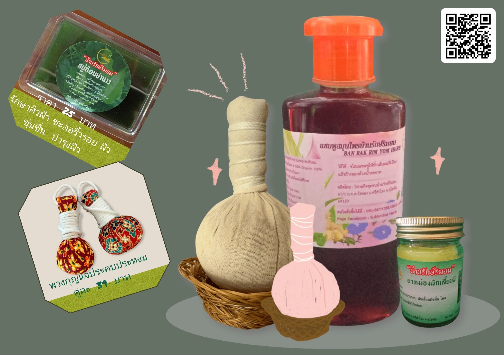
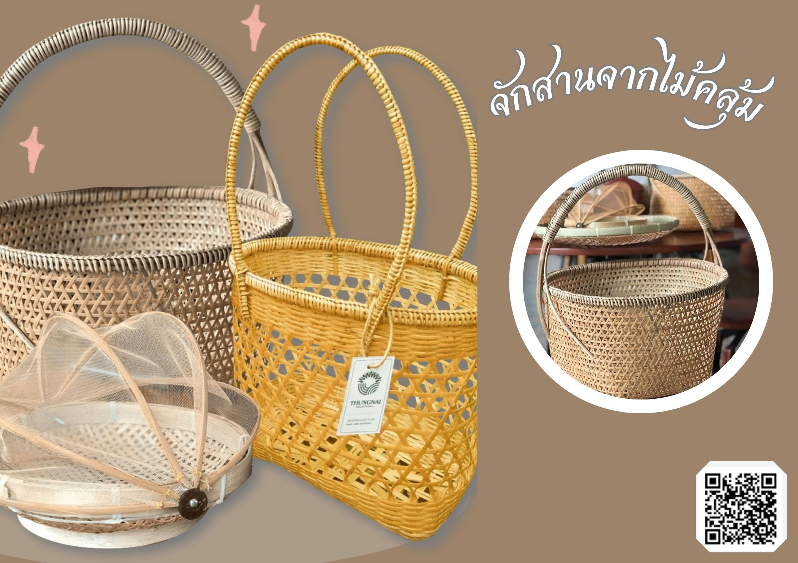

ผ้าไหมแพรวา ภูมิปัญญาชาวผู้ไท

ประยุกต์ผ้าไหมแพรวาผสานอัตลักษณ์ชุมชน สู่ผลิตภัณฑ์ดีไซน์ใหม่ ให้ใคร ๆ ก็ใช้ได้ มหาวิทยาลัยราชภัฏมหาสารคาม จังหวัดมหาสารคาม ร่วมมือกับโครงการพัฒนาและส่งเสริมการขายผลิตภัณฑ์ผ้าทอมือของชาวภูไทย ซึ่งเรียกกันว่าผ้าไหมแพรวา และเป็นภูมิปัญญาดั้งเดิมของชนกลุ่มน้อยชาวภูไทยมาช้านาน โดยได้มีการนำลายผ้าไหมแบบเดิมมาปรับโฉมใหม่ให้เฉิดฉายบนผลิตภัณฑ์อื่นๆ นอกจากผ้าทอแบบเดิม เช่น กระเป๋า ผ้าพันคอ และอื่นๆ อีกมากมาย โดยได้มีการพัฒนาเทคนิคทั้งการผลิตและการทำตลาด เพื่อให้พัฒนาคุณภาพอยู่เสมอ
สมุนไพรพื้นบ้าน
จากภูมิปัญญาดั้งเดิมสู่การดูแลสุขภาพ มูลนิธิวัชระดวงแก้ว จังหวัดนครนายก จัดตั้งโครงการพัฒนาทักษะอาชีพการรูปจากสมุนไพรพื้นบ้านใกล้ตัวเพื่อเพิ่มรายได้ของกลุ่มญาติธรรม ด้วยความร่วมมือของภาคีเครือข่าย หมู่บ้านวังทอง อำเภอศรีสำโรง จังหวัดสุโขทัยและ หมู่บ้านดงละคร อำเภอเมือง จังหวัดนครนายก แปรรูปสมุนไพรพื้นบ้าน เช่น แชมพูสมุนไพร 9 ชนิด ลูกประคบ และยาหม่องผักเสี้ยนผี เกิดการประยุกต์ภูมิปัญญาดั้งเดิม ภายใต้แนวคิด “พาหัวใจใกล้กัน” ให้กลายเป็นผลิตภัณฑ์ร่วมสมัย
ข้าวเกรียบแปรรูปและหัตถกรรม

ข้าวเกรียบที่มาพร้อมกับคุณค่าทางอาหาร อาทิ จิ้งหรีด ไข่มดแดง เมล็ดมะมื่น (กระบก) นอกจากนั้นยังมีสินค้าหัตถกรรมจากวัตถุดิบในท้องถิ่น วิสาหกิจชุมชนกลุ่มเกษตรกรธรรมชาติ ต.ป่าสัก จังหวัดลำพูน จัดทำโครงการยกระดับชุมชนเกษตรอินทรีย์บนฐานภูมินิเวศวัฒนธรรมตลอดห่วงโซ่ของชุมชน พัฒนาและเพิ่มมูลค่าให้กับวัตถุดิบในท้องถิ่น ให้กลายเป็นทั้งของกินและของใช้ เช่น ข้าวเกรียบมะมื่นและข้าวเกรียบจิ้งหรีด ที่มีคุณค่าทางโภชนาการสูง รวมไปถึงสินค้าหัตถกรรมต่างๆ อีกด้วย
จักสานจากไม้คลุ้ม
จักสานจากไม้คลุ้ม เครื่องใช้ในครัวเรือน สวยงาม แข็งแรง และทนทานต่อเชื้อรา วิสาหกิจชุมชนจักสานคลุ้มบ้านทุ่งใน จังหวัดนครศรีธรรมราช จัดทำโครงการพัฒนาศักยภาพในการประกอบอาชีพสานคลุ้มของวิสาหกิจชุมชนกลุ่มผลิตภัณฑ์จักสานคลุ้ม บ้านทุ่งใน ด้วยการแปรรูปวัตถุดิบไม้คลุ้มในท้องถิ่น ให้กลายเป็นเครื่องใช้ในครัวเรือนที่สวยงาม ใช้ประโยชน์ได้จริง มีคุณสมบัติแข็งแรงและทนทานต่อเชื้อรา